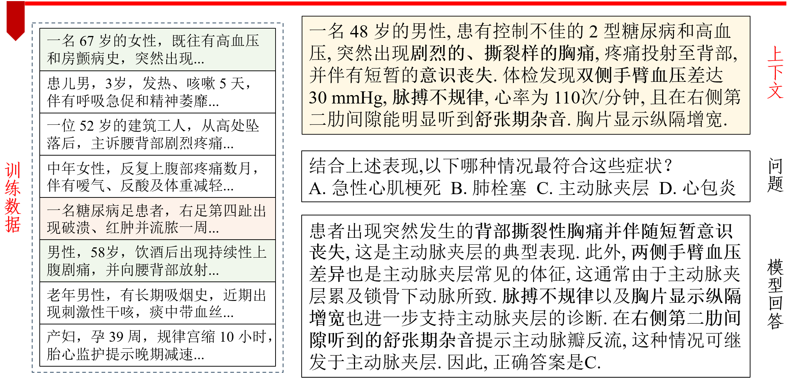
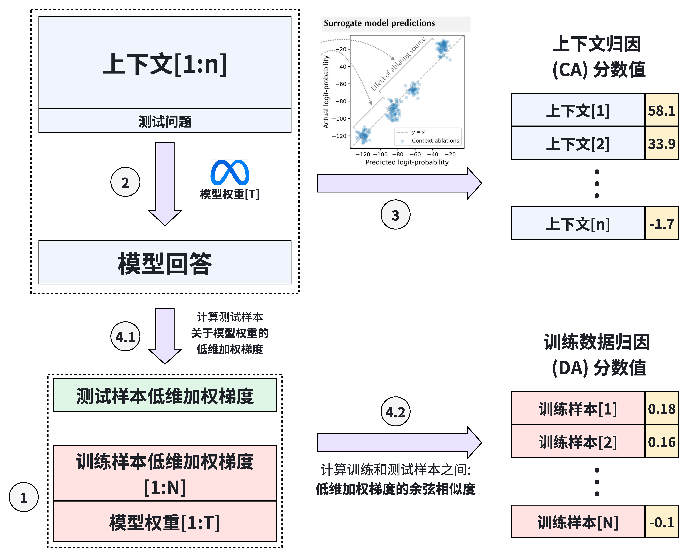
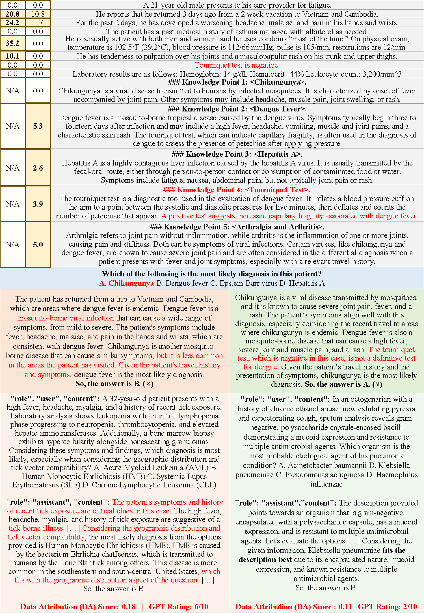

本文档为 DCA 系统 (Data and Context Attribution System) 的使用说明文档, 亦包含系统应用效果的定性反馈, 作为复旦大学 "人工智能的伦理与治理" (DATA130055.01; 2025 年春季) 课程期末设计的一部分. 关于 DCA 系统完整的项目背景, 需求分析, 实现设计等内容, 请参照最终提交的论文正文.

DCA 系统的整体目的是: 对于大语言模型 (LLMs) 生成的临床诊断内容, 我们既希望将其归因 (attribute) 于上下文 (context) 中所提供的病人病情描述, 也希望将其归因到在知识运用或逻辑推理上对模型产生特定引导作用的训练样本 (training examples). 这样一个指向训练数据 ("data") 和上下文 ("context") 的同步归因系统, 可以帮助临床医疗从业者了解大模型做出临床诊断的依据, 一方面提高了模型生成内容的可解释性 (interpretability) 和透明度 (transparency); 另一方面也能通过针对性地溯源归因得到的训练数据或上下文, 及时地发现基于错误数据的模型生成内容, 从而高效地修正错误, 减少临床诊疗的误诊率. 因此, DCA 系统也是对大语言模型在训练和推理阶段的数据伦理的重要增强手段.

DCA 系统共包含三个技术组件: (1) 训练数据归因模块 (源码包含在 ./less/ 文件夹内) (2) 上下文归因模块 (源码包含在 ./context_cite/ 文件夹内). (3) 同步并行进行训练数据和上下文归因的高效框架 (源码包含在 ./medqa/ 文件夹内). 下面本文档将分别说明这三个技术组件的运行与使用方式.
特别地, 在运行 DCA 系统的 Python 和 Shell 脚本之前, 请先参考 ./less-requirements.txt 和 ./contextcite-requirements.txt 进行环境配置. 之后, 请参考 ./utils_download_models_datasets 文件夹内的脚本下载所需的大语言模型和训练、测试数据. 本代码仓库所使用的默认模型是 Meta 公司开发的 Llama-3.1-8B; 默认训练数据集是清华大学自然语言处理实验室推出的 UltraMedical 数据集; 默认测试数据集是 MedQA-USMLE 临床诊断问答数据集, 其题型为历年美国医师执业资格考试 (USMLE) 的四选项选择题.
训练数据的归因模块基于 Princeton 自然语言处理实验室研发的 LESS 技术. 我们基于其数学原理, 将其从 "训练模型时的数据选择方法" 改造为 "模型推理时实时的训练数据归因方法". 其 Python 源码包含于 ./less/ 文件夹内. 想要运行 DCA 系统的训练数据归因模块, 请参照 ./scripts_LESS_UM-llama3.1 文件夹内的 Shell 脚本, 从 step1 按顺序运行至 step3_2 即可. 特别地, 我们在 ./scripts_LESS_UM-llama3.1-logs 文件夹内也提供了这些 Shell 脚本正确运行的情况下所应输出的 log 记录文件, 供老师和助教参考.
上下文的归因模块基于 MIT Madry 机器学习实验室研发的 ContextCite 技术. 其 Python 源码包含于 ./context_cite/ 文件夹内. 类似地, 想要运行 DCA 系统的上下文归因模块, 请参照 ./scripts_contextcite-llama3.1 文件夹内的 Shell 脚本; 我们也在 ./scripts_contextcite-llama3.1-logs 文件夹内提供了 Shell 脚本正确运行时的输出记录文件. 此外, 为方便老师和助教上手 ContextCite 这个技术包, 我们在 ./notebooks/ 文件夹内额外提供了一个 quickstart_example.ipynb jupyter notebook 文件, 可以直观便捷地查看上下文归因技术的使用效果.
之后, 我们将上述两大归因模块统一在 DCA 系统的并行框架内, 从而使得两类数据源的归因计算可以同步高效执行 (i.e., 上面的流程图中的步骤 3 和步骤 4.1, 4.2 可以并行执行). 其 Python 源码包含在 ./medqa/ 文件夹内, 同样通过 ./scripts_contextcite-llama3.1 文件夹内的 Shell 脚本可以运行.
最后, 我们也对于 DCA 系统的使用效果, 在非检索增强生成 (Non-RAG) 和检索增强生成 (RAG) 两个实际场景下, 做了初步定性测试, 证明了如下两点:
我们展示一个定性分析样本如下. 其为 MedQA-USMLE 数据集中第 228 号测试样本. 可以明显地发现: 归因分数值最高的训练样本从知识 (knowledge) 和推理 (reasoning) 两个角度分别对模型的回答产生了误导, 由此导致最终回答错误. 题干描述一位 21 岁男子自越南, 柬埔寨返国 3 天后出现高热, 剧烈的掌指关节疼痛, 干性斑丘疹, 伴轻度白细胞-血小板减少与转氨酶升高, 压脉带试验阴性；这些典型特征应指向以小关节剧痛著称的选项 A: Chikungunya (基孔肯雅热). 模型却因 "当地登革热流行" 及 "发热+血小板减少" 而选择选项 B: Dengue (登革热). 这种偏差来自归因分数值最高的训练样本 "Tick-borne Ehrlichiosis" (蜱传艾利希氏体症): 该例同样展示 "发热+白细胞, 血小板减少+转氨酶升高" 的实验室三联征, 并把 "地理分布/传播媒介" 作为决策关键, 最后答案亦落在选项 B. 知识层面上, 该例将上述三联征与某一特定虫媒病直接对应, 使模型把类似实验室结果自动联想到登革热, 而忽视了基孔肯雅热的小关节痛与阴性压脉带症状更具特异性；推理层面上, 模型沿用训练样本的 "实验室匹配 $\rightarrow$ 考察旅行史 $\rightarrow$ 锁定最常见病原" 套路, 而未充分权衡症状特征差异. 于是 "实验室-地理" 这一思考捷径在 228 号案例里造成 "症状忽视" 的逻辑谬误, 最终导致错误选择.

上图中, 对于左上角两栏上下文归因分数值 (黄), 左侧为 Non-RAG, 右侧为 RAG. 右上角 (灰) 为切分后的上下文, 中间部分 (蓝) 为测试问题.下半部分左侧 (红) 为 Non-RAG 场景下模型生成的回答, 以及归因分数值最高的训练样本; 右侧 (绿) 为 RAG. 红色高亮文字为引导模型做出正确/错误诊断的关键内容. 本例中, 模型在 Non-RAG 下推理错误, 但在 RAG 之后得到纠正; 这一点也在归因分数值的变化中有所体现.